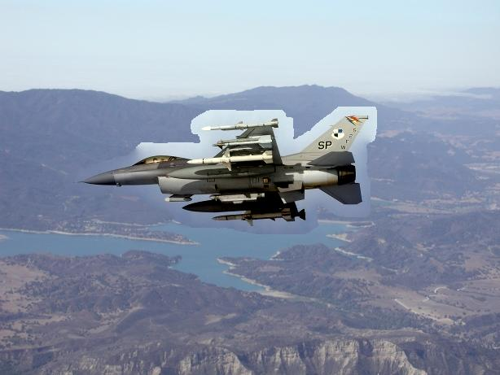
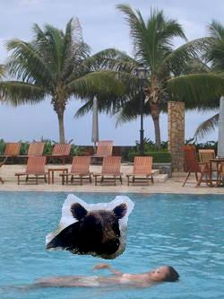
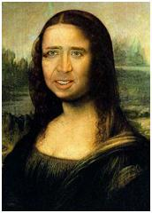
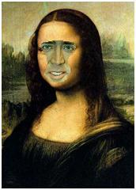

Project Description
Image blending composites a selected image region into a target image seamlessly. In this project, you are asked to implement two image blending methods: Poisson blending [1] and Coordinate instant cloning [2]. For the first method, you will need to implement a Poisson solver. You can find example codes for Poisson solver from this website. You might need to modify them for your project though. For the second method, you only need to implement the baseline method without speeding up using adaptive meshes. You can work in a team of two students for this project.
-- Courtesy of Course Website
In this assignment we use matlab to implement the required algorithm: Poisson Blending & MVC Cloning.
Image Blending
Concept: Poisson BlendingConcept: Mean-Value Coordinate Blending
We got 3 inputs: the source image P, the image P's mask (where we can get the edge ∂P), and the target image
In this algorithm, we compute the MVC of each pixel in P with respect to ∂P.
The Mean-Value interpolant depends on the difference between the edge and the point in gragh.
Culculating a point x's MVC coordinates:

The complete algorithm of MVC Cloning:

There is still some bugs in our MVC cloning, thus the results are quit strange.
| source | mask | target | Poisson | MVC |
|---|---|---|---|---|
 |
 |
 |
 | |
 |
 |
 |
 |
 |
 |
 |  |
Reference
- [1] P. Perez, M. Gangnet, Poisson Image Editing, ACM SIGGAPH 2003.
- [2] Z. Farbman, G. Hoffer, Y. Lipman, D. Cohen-Or, D. Lischinski, Coordinates for Instant Image Cloning, ACM SIGGAPH 2009.